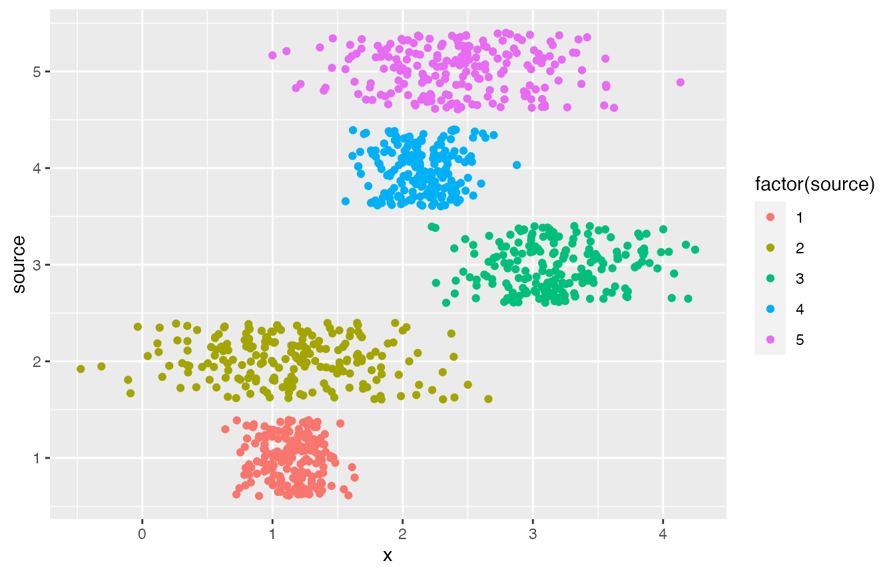
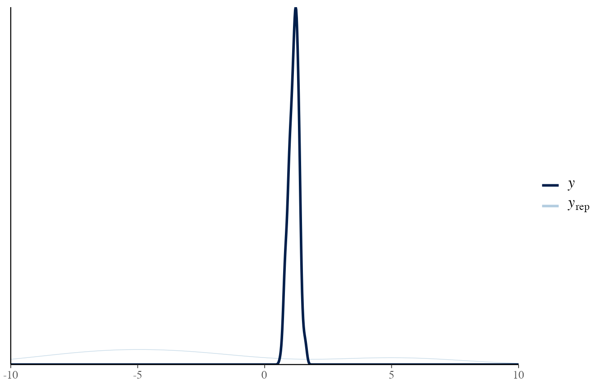
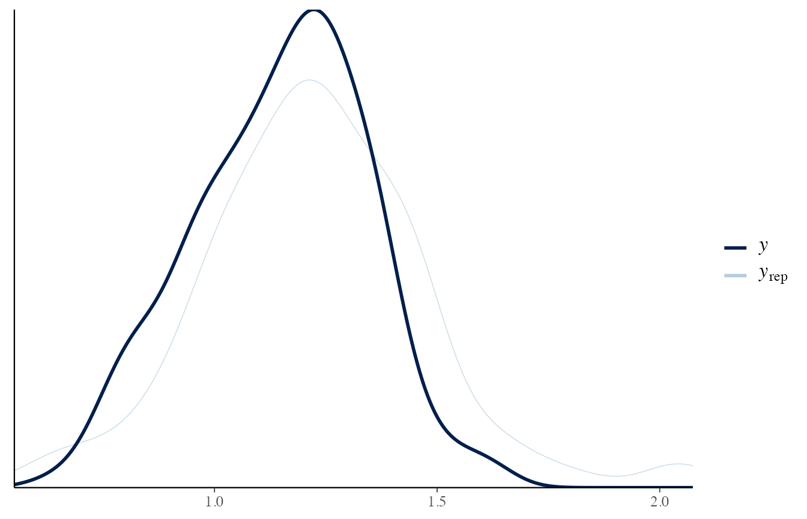
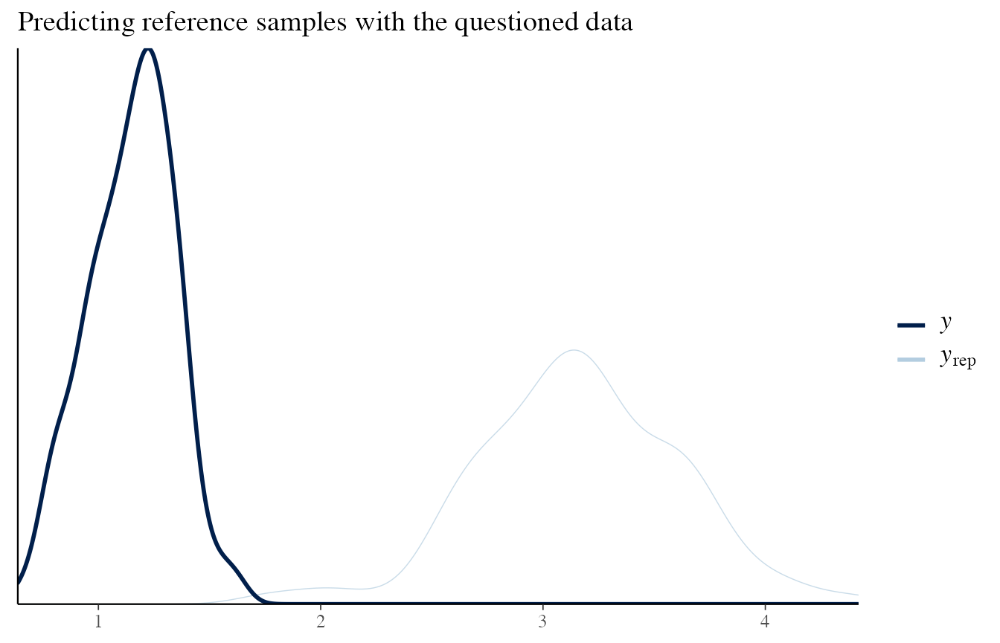

Normal-Normal model
LG
2019-01-29
normalnormal-model.RmdThis vignette introduces the Normal-Normal model. It is designed to be a benchmark.
Model
Consider Normal samples \(X_i\) from \(m\) different sources. Each source is sampled \(n\) times.
Dirichlet parameter are also assumed to be sampled from Dirichlet distributions.
- \(\boldsymbol{X}_{ij} \sim N(\mu_i, \sigma_i)\) iid \(\forall j = 1, \ldots, n\) with \(i = 1, \ldots, m\)
- \(\mu_i \sim N(\mu_0^{(\mu)}, \sigma_0^{(\mu)}) \quad \forall i = 1, \ldots, m\)
- \(\sigma_i \sim N(\mu_0^{(\sigma)}, \sigma_0^{(\sigma)}) \quad \forall i = 1, \ldots, m\)
We assume that \(\mu_0^{(\mu)}, \sigma_0^{(\mu)}, \mu_0^{(\sigma)}, \sigma_0^{(\sigma)}\) are known.
Data
The Normal-Normal model is implemented in rsamplestudy.
Let’s generate some data:
library(dplyr)
#>
#> Attaching package: 'dplyr'
#> The following objects are masked from 'package:stats':
#>
#> filter, lag
#> The following objects are masked from 'package:base':
#>
#> intersect, setdiff, setequal, union
library(ggplot2)
library(rsamplestudy)
n <- 200
m <- 5
list_pop <- rsamplestudy::fun_rnorm_population(n, m)
list_pop$df_pop %>%
ggplot() +
geom_point(aes(x = x, y = source, col = factor(source)), position = 'jitter')
list_pop$df_sources
#> # A tibble: 5 x 3
#> source mu sigma
#> <int> <dbl> <dbl>
#> 1 1 1.13 0.209
#> 2 2 1.15 0.547
#> 3 3 3.18 0.426
#> 4 4 2.15 0.246
#> 5 5 2.47 0.561
list_pop$list_hyper
#> $m_mu
#> [1] 2.287247
#>
#> $m_sigma
#> [1] 1.196772
#>
#> $s_mu
#> [1] -0.6942925
#>
#> $s_sigma
#> [1] 0.412293Generate two sets of samples, under two different hypotheses:
k_ref <- 10
k_quest <- 10
source_ref <- 1
source_same <- source_ref
source_diff <- 3 # single questioned different source
list_samples_same <- rsamplestudy::make_dataset_splits(list_pop$df_pop, k_ref, k_quest, source_ref = source_ref, source_quest = source_same)
list_samples_diff <- rsamplestudy::make_dataset_splits(list_pop$df_pop, k_ref, k_quest, source_ref = source_ref, source_quest = source_diff)Organize data, and elicit the hyperprior from the background data (assume vague hyperpriors):
list_data_same <- rstanBF::stanBF_prepare_rsamplestudy_data(list_pop, list_samples_same)
list_data_diff <- rstanBF::stanBF_prepare_rsamplestudy_data(list_pop, list_samples_diff)
list_hyper <- rstanBF::stanBF_elicit_hyperpriors(list_samples_same$df_background, 'NormNorm', 'vague')Perform the NUTS sampling:
n.iter <- 5000
n.burnin <- 1000
n.cores <- 3
n.chains <- n.cores
obj_StanBF_same <- rstanBF::compute_BF_Stan(list_data_same, 'NormNorm', list_hyper, n.iter = n.iter, n.burnin = n.burnin, n.cores = n.cores, n.chains = n.chains, silent = TRUE)
obj_StanBF_diff <- rstanBF::compute_BF_Stan(list_data_diff, 'NormNorm', list_hyper, n.iter = n.iter, n.burnin = n.burnin, n.cores = n.cores, n.chains = n.chains, silent = TRUE)obj_StanBF_same
#> stanBF object containing posterior samples from H1, H2.
#> Model: Normal-Normal
#> Obtained BF: 1733724
#> Ran with 3 chains, 5000 HMC iterations.
obj_StanBF_diff
#> stanBF object containing posterior samples from H1, H2.
#> Model: Normal-Normal
#> Obtained BF: 1.0192e-05
#> Ran with 3 chains, 5000 HMC iterations.More details on the Stan outputs:
obj_StanBF_same$stanfit
#> $H1
#> Inference for Stan model: stan_NormNorm_H1.
#> 3 chains, each with iter=5000; warmup=1000; thin=1;
#> post-warmup draws per chain=4000, total post-warmup draws=12000.
#>
#> mean se_mean sd 2.5% 25% 50% 75% 97.5%
#> mu_ref 1.05 0.00 0.05 0.95 1.02 1.05 1.08 1.15
#> sigma_ref 0.22 0.00 0.04 0.16 0.19 0.21 0.24 0.31
#> sim_mu_ref 0.06 0.91 100.01 -199.28 -67.42 -1.19 67.71 198.64
#> sim_sigma_ref 79.68 0.56 60.58 3.36 31.64 66.99 115.32 224.85
#> sim_d_ref 0.67 1.29 140.73 -276.69 -85.78 -0.61 86.74 284.32
#> pred_d_ref 1.05 0.00 0.23 0.60 0.90 1.05 1.20 1.50
#> lp__ -10.47 0.02 1.06 -13.25 -10.86 -10.14 -9.72 -9.44
#> n_eff Rhat
#> mu_ref 7981 1
#> sigma_ref 7142 1
#> sim_mu_ref 11950 1
#> sim_sigma_ref 11679 1
#> sim_d_ref 11824 1
#> pred_d_ref 12055 1
#> lp__ 4643 1
#>
#> Samples were drawn using NUTS(diag_e) at Tue Jan 29 18:19:23 2019.
#> For each parameter, n_eff is a crude measure of effective sample size,
#> and Rhat is the potential scale reduction factor on split chains (at
#> convergence, Rhat=1).
#>
#> $H2
#> Inference for Stan model: stan_NormNorm_H2.
#> 3 chains, each with iter=5000; warmup=1000; thin=1;
#> post-warmup draws per chain=4000, total post-warmup draws=12000.
#>
#> mean se_mean sd 2.5% 25% 50% 75% 97.5%
#> mu_ref 1.06 0.00 0.09 0.88 1.00 1.06 1.11 1.24
#> sigma_ref 0.28 0.00 0.08 0.17 0.22 0.26 0.31 0.47
#> mu_quest 1.04 0.00 0.07 0.91 1.00 1.04 1.08 1.18
#> sigma_quest 0.21 0.00 0.06 0.13 0.16 0.19 0.23 0.36
#> sim_mu_ref 1.26 0.91 100.00 -194.53 -66.39 1.47 68.02 193.23
#> sim_sigma_ref 79.81 0.55 60.44 3.14 32.21 67.01 114.61 224.73
#> sim_mu_quest 1.73 0.92 100.05 -191.88 -65.67 1.18 69.17 195.88
#> sim_sigma_quest 79.51 0.55 60.54 2.82 31.18 66.78 114.33 223.35
#> sim_d_ref 1.45 1.29 142.38 -284.24 -83.91 2.56 87.33 284.81
#> sim_d_quest 1.36 1.29 140.58 -277.61 -84.74 -0.92 88.23 284.23
#> pred_d_ref 1.06 0.00 0.30 0.47 0.87 1.06 1.24 1.65
#> pred_d_quest 1.04 0.00 0.23 0.59 0.90 1.04 1.18 1.48
#> lp__ -24.48 0.02 1.53 -28.35 -25.21 -24.14 -23.37 -22.59
#> n_eff Rhat
#> mu_ref 9152 1
#> sigma_ref 7868 1
#> mu_quest 7179 1
#> sigma_quest 7048 1
#> sim_mu_ref 12034 1
#> sim_sigma_ref 12096 1
#> sim_mu_quest 11823 1
#> sim_sigma_quest 12086 1
#> sim_d_ref 12193 1
#> sim_d_quest 11952 1
#> pred_d_ref 11313 1
#> pred_d_quest 11339 1
#> lp__ 4502 1
#>
#> Samples were drawn using NUTS(diag_e) at Tue Jan 29 18:19:24 2019.
#> For each parameter, n_eff is a crude measure of effective sample size,
#> and Rhat is the potential scale reduction factor on split chains (at
#> convergence, Rhat=1).
obj_StanBF_diff$stanfit
#> $H1
#> Inference for Stan model: stan_NormNorm_H1.
#> 3 chains, each with iter=5000; warmup=1000; thin=1;
#> post-warmup draws per chain=4000, total post-warmup draws=12000.
#>
#> mean se_mean sd 2.5% 25% 50% 75% 97.5%
#> mu_ref 2.09 0.00 0.28 1.54 1.91 2.10 2.28 2.64
#> sigma_ref 1.25 0.00 0.23 0.90 1.09 1.22 1.38 1.78
#> sim_mu_ref 0.14 0.91 99.26 -196.86 -66.38 0.73 66.82 196.57
#> sim_sigma_ref 79.33 0.55 60.19 3.09 31.61 66.62 113.99 224.08
#> sim_d_ref 0.71 1.27 139.00 -274.74 -85.29 2.30 84.56 275.07
#> pred_d_ref 2.11 0.01 1.31 -0.49 1.26 2.10 2.96 4.70
#> lp__ -43.51 0.02 1.04 -46.34 -43.91 -43.20 -42.77 -42.48
#> n_eff Rhat
#> mu_ref 6663 1
#> sigma_ref 6700 1
#> sim_mu_ref 11881 1
#> sim_sigma_ref 11770 1
#> sim_d_ref 11919 1
#> pred_d_ref 11005 1
#> lp__ 4794 1
#>
#> Samples were drawn using NUTS(diag_e) at Tue Jan 29 18:19:31 2019.
#> For each parameter, n_eff is a crude measure of effective sample size,
#> and Rhat is the potential scale reduction factor on split chains (at
#> convergence, Rhat=1).
#>
#> $H2
#> Inference for Stan model: stan_NormNorm_H2.
#> 3 chains, each with iter=5000; warmup=1000; thin=1;
#> post-warmup draws per chain=4000, total post-warmup draws=12000.
#>
#> mean se_mean sd 2.5% 25% 50% 75% 97.5%
#> mu_ref 1.01 0.00 0.07 0.88 0.97 1.01 1.05 1.14
#> sigma_ref 0.20 0.00 0.06 0.12 0.16 0.19 0.23 0.35
#> mu_quest 3.17 0.00 0.19 2.80 3.06 3.17 3.28 3.54
#> sigma_quest 0.56 0.00 0.16 0.34 0.45 0.53 0.64 0.97
#> sim_mu_ref 0.81 0.92 99.60 -195.10 -66.48 -0.47 68.75 196.93
#> sim_sigma_ref 79.96 0.56 60.36 3.00 31.60 67.74 115.45 222.76
#> sim_mu_quest 0.06 0.91 100.72 -197.76 -67.81 -0.30 67.16 198.19
#> sim_sigma_quest 78.76 0.54 59.70 2.94 31.33 66.08 113.83 223.54
#> sim_d_ref 0.27 1.30 141.90 -283.28 -86.05 1.53 86.81 288.95
#> sim_d_quest -1.82 1.28 140.33 -283.24 -88.09 -0.57 84.02 275.81
#> pred_d_ref 1.01 0.00 0.23 0.56 0.88 1.01 1.14 1.46
#> pred_d_quest 3.17 0.01 0.61 1.91 2.80 3.17 3.54 4.39
#> lp__ -30.65 0.02 1.57 -34.59 -31.41 -30.29 -29.51 -28.73
#> n_eff Rhat
#> mu_ref 8251 1
#> sigma_ref 7308 1
#> mu_quest 7855 1
#> sigma_quest 7818 1
#> sim_mu_ref 11812 1
#> sim_sigma_ref 11665 1
#> sim_mu_quest 12276 1
#> sim_sigma_quest 12022 1
#> sim_d_ref 11906 1
#> sim_d_quest 12050 1
#> pred_d_ref 11162 1
#> pred_d_quest 11652 1
#> lp__ 4579 1
#>
#> Samples were drawn using NUTS(diag_e) at Tue Jan 29 18:19:32 2019.
#> For each parameter, n_eff is a crude measure of effective sample size,
#> and Rhat is the potential scale reduction factor on split chains (at
#> convergence, Rhat=1).Post-processing
Using general post-processing utils in bayesplot package:
suppressPackageStartupMessages(library(rstan))
library(bayesplot)
#> This is bayesplot version 1.6.0
#> - Online documentation and vignettes at mc-stan.org/bayesplot
#> - bayesplot theme set to bayesplot::theme_default()
#> * Does _not_ affect other ggplot2 plots
#> * See ?bayesplot_theme_set for details on theme setting
results_same_H1 <- obj_StanBF_same$stanfit$H1 %>% As.mcmc.list()
results_same_H2 <- obj_StanBF_same$stanfit$H2 %>% As.mcmc.list()Parameter recovery
First, we recover NUTS draws and true values. Then we use bayesplot tools to plot them.
Notice that the orders of the variables in mcmc_recover_intervals arguments must match.
Questioned data sampled under \(H_1\):
# H1
draws <- obj_StanBF_same$stanfit$H1 %>% As.mcmc.list(pars = c('mu_ref', 'sigma_ref'))
df_sources_ref <- list_pop$df_sources %>% filter(source == source_same) %>% select(mu, sigma)
true_sources <- as.numeric(df_sources_ref)
bayesplot::mcmc_recover_intervals(draws, true_sources)
# H2, reference and questioned
draws <- obj_StanBF_same$stanfit$H2 %>% As.mcmc.list(pars = c('mu_ref', 'sigma_ref', 'mu_quest', 'sigma_quest'))
df_sources <- list_pop$df_sources %>% filter(source == source_same) %>% select(mu, sigma)
true_sources <- rep(as.numeric(df_sources), 2)
bayesplot::mcmc_recover_intervals(draws, true_sources)Questioned data sampled under \(H_2\):
# H1: assuming that sources are the same
# This is not true, so the posteriors do not fit well
draws <- obj_StanBF_diff$stanfit$H1 %>% As.mcmc.list(pars = c('mu_ref', 'sigma_ref'))
df_sources_ref <- list_pop$df_sources %>% filter(source == source_same) %>% select(mu, sigma)
true_sources <- as.numeric(df_sources_ref)
bayesplot::mcmc_recover_intervals(draws, true_sources)
# H2, reference and questioned from different sources
# This is true, the posteriors are also good
draws <- obj_StanBF_diff$stanfit$H2 %>% As.mcmc.list(pars = c('mu_ref', 'sigma_ref', 'mu_quest', 'sigma_quest'))
df_sources_ref <- list_pop$df_sources %>% filter(source == source_same) %>% select(mu, sigma)
df_sources_quest <- list_pop$df_sources %>% filter(source == source_diff) %>% select(mu, sigma)
true_sources <- c(as.numeric(df_sources_ref), as.numeric(df_sources_quest))
bayesplot::mcmc_recover_intervals(draws, true_sources)
Prior and posterior predictive checks
To simplify, consider only when data is sampled from the same source.
Here, we plot the prior predictive distribution.
It should generate data which should be realistic, but not necessarily adapted to the observed data.
It represents the background knowledge of our data.
Here, we specified a very vague prior, so the generated values are really extreme compared to the one measured.
# H1: prior predictive
draws_prior <- obj_StanBF_same$stanfit$H1 %>% as.matrix(pars = c('sim_d_ref'))
data_ref <- list_pop$df_pop %>% filter(source == source_ref) %>% pull('x')
# extract a subset of draws
draws_prior_sub <- t(as.matrix(draws_prior[1:length(data_ref)]))
bayesplot::ppc_dens_overlay(data_ref, draws_prior_sub) +
scale_x_continuous(limits = c(-10, 10))
#> Warning: Removed 184 rows containing non-finite values (stat_density).
The posterior predictive distribution, instead, should be a good approximation of the observed data.
If it does not occur, it means that the model is not capable of predicting from the correct distribution.
In other words, the trained model is not adapted to the observed data.
draws_posterior <- obj_StanBF_same$stanfit$H1 %>% as.matrix(pars = c('pred_d_ref'))
draws_posterior_sub <- t(as.matrix(draws_posterior[length(draws_posterior) - (1:length(data_ref)) ]))
bayesplot::ppc_dens_overlay(data_ref, draws_posterior_sub)
To check that it is working, let’s consider the situation where the sources are different, and consider the reference and questioned items separately.
data_quest <- list_pop$df_pop %>% filter(source == source_diff) %>% pull('x')
# Reference data
draws_posterior <- obj_StanBF_diff$stanfit$H2 %>% as.matrix(pars = c('pred_d_ref'))
draws_posterior_sub <- t(as.matrix(draws_posterior[length(draws_posterior) - (1:length(data_ref)) ]))
bayesplot::ppc_dens_overlay(data_ref, draws_posterior_sub)
# Questioned data
draws_posterior <- obj_StanBF_diff$stanfit$H2 %>% as.matrix(pars = c('pred_d_quest'))
draws_posterior_sub <- t(as.matrix(draws_posterior[length(draws_posterior) - (1:length(data_quest)) ]))
bayesplot::ppc_dens_overlay(data_ref, draws_posterior_sub) + ggtitle('Predicting reference samples with the questioned data')
bayesplot::ppc_dens_overlay(data_quest, draws_posterior_sub) + ggtitle('Predicting questioned samples with the questioned data')